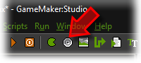
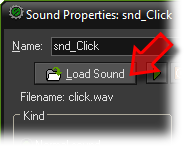
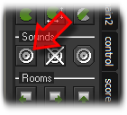
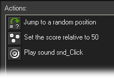

Tutorial
Page 9 of 15
Adding A Sound
Next we add a sound effect to the game. This effect must
play when the player clicks on an apple. Click on the
Resources menu and press Create Sound
or click on the button with the image of a speaker:

In the form that appears, give the sound an appropriate name and press the Load Sound
button.

In the file selector that appears open the folder where the resources are (the same as where you found the sprites and backgrounds)
and in there double click on the sound file click.wav.
Press OK to close the form. The sound should now be visible in the list at the left. We now need to
make sure the sound is played when the player clicks on an apple. Reopen the apple object by double clicking
on it in the list at the left.
Select the Left Pressed event, by clicking on it in the list of events. In the list
of actions you will now see the jump and score actions. At the right of the form, select the tabbed page labeled
main1. A new set of actions appears. Drag the action with the speaker on it to the list of actions to play
a sound.

In the form that appears, select as a sound the click sound (click with
the mouse on the top menu icon to select the sound). Make
sure to keep the value of loop to false as we want the sound to play only once. Next press the OK
button. The action list should now look as follows:

Again press OK to close the object form. Save and play the game, and now the sound should
play whenever you click on an apple.